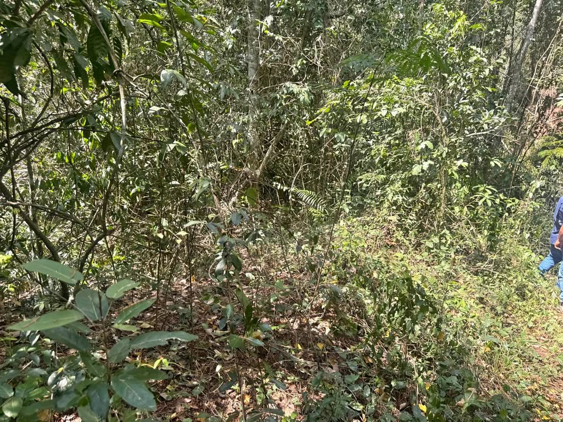

PEN170,000 12.38 ha

12.38 HECTÁREAS EN VALLE OESTE – PUCACACA Propiedad productiva, forestal y con quebrada natural Precio: S/ 170,000 Excelente oportunidad de inversión en el Valle Oeste de Pucacaca. Propiedad de 12.38 hectáreas, ubicada en el km 9 de la carretera a Sedasisa, a 9 km de la FBT, con acceso mediante vía afirmada con bicapa. El terreno presenta topografía plana y una combinación de áreas agrícolas, forestales, pastizales, bosque y purma. Cuenta además con quebrada natural dentro de la propiedad. El predio tiene antecedentes productivos de maíz, algodón y teca, ofreciendo posibilidades para desarroll